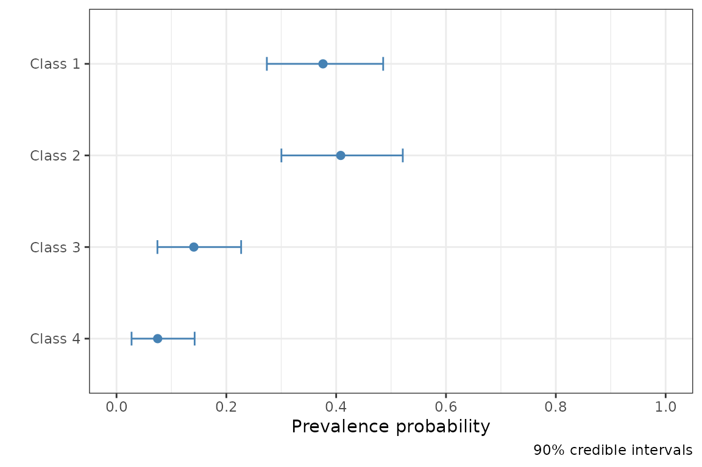

What is rater?
The {rater} package is designed to allow easy fitting and analysis of Bayesian models of categorical data annotation using Stan. Here we demonstrate the basic workflow for using the package.
Data
We will use the anesthesia data set taken from the paper Maximum Likelihood Estimation of Observer Error-Rates Using the EM Algorithm by A. P. Dawid and A. M. Skene, the paper which introduced the original Dawid-Skene model the type of models used This dataset is included in rater. We can prepare the package and data with:
#> * The rater package uses `Stan` to fit bayesian models.
#> * If you are working on a local, multicore CPU with excess RAM please call:
#> * options(mc.cores = parallel::detectCores())
#> * This will allow Stan to run inference on multiple cores in parallel.
# Access the 'anesthesia' data set.
data("anesthesia")The data comes in the form of a data.frame with three columns item, rater and rating. In the nomenclature of the package we would describe this as long data. Long data is the standard data format for passing data to inference functions in {rater}. The item column is the index of each item, the rater column is the index of the rater and rating is the actual rating. For example the twentieth row of the dataset:
anesthesia[20, ]#> item rater rating
#> 20 3 4 2means that item 3 was rated as being in category 2 by the fourth rater. {rater} also allows the use of grouped data for fitting some of the models but that feature is not covered in this vignette.
Inference
The core function of the {rater} package is the rater() function which fits a specified categorical rating to model to given data. This function has two arguments: data, data in an appropriate format and model, a character string or functions specifying the model you would like to fit. By default rater() will fit the model using MCMC (specifically NUTS) provided by Stan. To fit the basic Dawid-Skene model1 to the anesthesia data we can run.
fit <- rater(anesthesia, "dawid_skene", chains = 1, verbose = FALSE)Note that here we have set verbose = FALSE to suppress the normal Stan sampling output. We have also specified that we should use only 1 chain, simply to speed up the creation of the vignette. Other fitting parameters can be passed directly to the underlying Stan functions through the ... in rater().
We can also compute MAP estimates by specifying method = "optim"in rater():
optim_fit <- rater(anesthesia, "dawid_skene", method = "optim")Plotting
Having fit the Dawid and Skene model to the data we can now plot parameter estimates from the model.
To plot the population prevalence estimates (the parameter \(\pi\) in the model) we run:
plot(fit, pars = "pi")
To plot the rater’s error’s matrices of the (the parameter \(\theta\) in the model) we run:
plot(fit, pars = "theta")
To plot the latent class estimates we run:
plot(fit, pars = "latent_class")Point estimates
In additions we can extract point estimates for all the parameters. These can be extracted using the point_estimates() function. Different parameters can be extracted using the pars argument i.e.
# Extract all parameters.
all_parameters <- point_estimate(fit)
# Extract only the 'pi' parameter.
point_estimate(fit, pars = "pi")#> $pi
#> [1] 0.37686071 0.40581501 0.14250970 0.07481458Note that the interpretation of the point estimates returned will differ depending on whether the model has been fit using MCMC or optimisation.
Other functions
{rater} also supports a variety of other functions to extract useful quantities from fit objects which are listed below:
Hopefully the uses of these functions are fairly self explanatory.
{rater} also supports the ‘class conditional’ and ‘hierarchical’ Dawid-Skene models as well as setting (some of) the prior parameters in all three models.↩︎